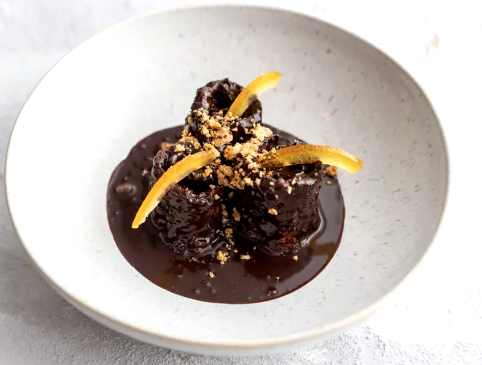

Dessert
Melanzana alla Cioccolata
Ein sizilianisches Dessert mit Überraschungseffekt: hauchdünne Auberginenscheiben werden frittiert, in dunkler Schokoladensauce gebadet, in Amaretti-Kakao-Bröseln gewälzt und über Nacht durchgezogen. Serviert als kleine Röllchen mit kandierten Orangen. Durch Frittieren, Zucker und Kuvertüre ein Dessert für besondere Anlässe, daher Rot.

Zutaten
Für die frittierten Auberginen
- 200 g Aubergine
- ca. 50 g Mehl
- 1 Ei
- neutrales Öl zum Frittieren
Für die Schokoladensauce
- 50 g Kakaopulver (Amaro)
- 70 g Zucker
- 350 ml heißes Wasser
- 150 g Zartbitterkuvertüre
- 4 cl Concerto-Likör (oder Amaretto)
- ½ TL Zimt
Für die Panade
- 80 g Amarettini
- 15 g Kakaopulver
Für die Deko
- 50 g kandierte Orangen
- 1 Handvoll Amarettini
Zubereitung
- Die Aubergine in sehr dünne Scheiben von etwa 2 mm schneiden und in heißem Öl (ca. 160 °C) frittieren. Auf einem Gitter abkühlen lassen. Dann erst in Mehl, anschließend in verquirltem Ei wenden und noch einmal im heißen Öl frittieren.
- Für die Panade die Amarettini fein zu Bröseln mahlen, mit dem Kakao mischen und auf einen großen Teller geben. Die kandierten Orangen in kleine Würfel schneiden und beiseitestellen.
- Für die Sauce Kakao und Zucker in einem Topf mischen. Das Wasser separat aufkochen und unter Rühren zugeben. Die Kuvertüre hinzufügen und unter gelegentlichem Rühren schmelzen lassen. Zum Schluss Likör und Zimt unterrühren.
- Die frittierten Auberginenscheiben einzeln in die abgekühlte Sauce tunken, in der Amaretti-Panade wälzen und in eine Auflaufform legen. Etwas Sauce darübergießen und mit Orangenwürfeln belegen. So nach und nach alle Scheiben in die Form schichten.
- Zuletzt mit der restlichen Sauce begießen und über Nacht durchziehen lassen.
- Zum Anrichten die Auberginenscheiben einzeln zu Röllchen aufrollen, drei davon in die Mitte eines tiefen Tellers setzen und mit Sauce begießen. Mit kandierten Orangen und zerbröselten Amarettini bestreuen.
Rezept-Idee von foodundco.de („Melanzana alla Cioccolata aus Kitchen Impossible“), hier in eigenen Worten zusammengefasst.